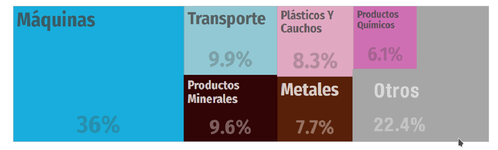
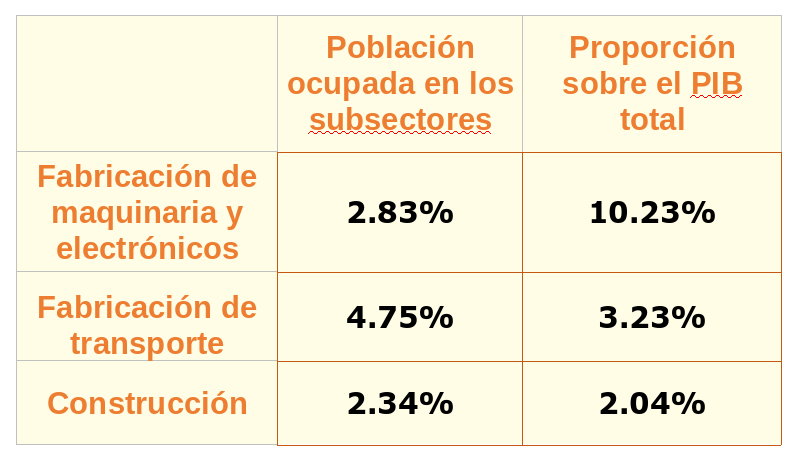

De acuerdo con el último dato del Sistema de Administración Tributaria (SAT), Torreón registró exportaciones por $6,131 mdd, así como importaciones por $1,659 mdd, resultando en un superávit de casi el 60% de su comercio exterior; este factor, entre otros, disminuye el menoscabo por las nuevas barreras arancelarias en el municipio.
El efecto más inmediato que se hizo notar tras la noticia de un arancel del 25% al acero y del 10% al aluminio en exportaciones mexicanas, fue la caída de 0.32% de los precios de la Bolsa Mexicana de Valores.
Más aún, a nivel macroeconómico, la moneda se depreció superando los 20 pesos el dólar, y por ésta alza ahora el mercado espera, con una probabilidad del 99.5% que Banxico aumente la tasa de interés, de acuerdo con Bloomberg. Como consecuencia del aumento en el tipo de cambio se espera que se genere inflación; y con el cambio de tasa de interés se tendrán créditos más caros.
Esto es por lo que se refiere a las consecuencias macroeconómicas; pero lo que debe de llamar más el interés son las consecuencias a nivel de la producción, pues es esta la base de la economía.
En un primer nivel, las empresas afectadas como son las dedicadas a las industrias metálicas básicas y a la fabricación de productos metálicos, disminuirán sus ganancias tanto por la baja en ventas en el extranjero como por la disminución del precio, lo que generará desempleo. De acuerdo al SAT, los productos afectados conforman aproximadamente el 0.10% de las exportaciones totales de La Laguna, tan sólo Torreón tiene más de 500 empresas dedicadas a la industria metálica básica y a la fabricación de productos metálicos (INEGI).
Tras dicha imposición hubo una baja en los precios del acero y el aluminio vendido en México. Esto debido a que, para compensar la baja en ventas en el país vecino, los exportadores redirigieron una parte de su oferta al mercado nacional; de manera semejante los precios de nuestros productos disminuirán en países diferentes a EUA, lo que incentivará la recuperación de las ventas.
En un segundo nivel, se encarecerán los productos que importamos de EUA que contengan acero o aluminio, que principalmente es la maquinaria (incluyendo los electrodomésticos), seguido por el transporte y sus piezas, y finalmente, productos metálicos, que suelen ser usados para la construcción y la fabricación de maquinaria y transporte. En 2014 aproximadamente el 31% de las importaciones de La Laguna eran precisamente de estos productos (SAT), y para 2016 casi el 50% de las importaciones de México eran procedentes de EUA, según el Observatorio de Complejidad Económica.
Otra rama afectada indirectamente es la minería de hierro y bauxita (aluminio), pues al ser menores las ganancias de las empresas que compran los recursos extraídos, éstas podrían poner presión a la baja en el precio de estos minerales. Sin embargo, cabe destacar, que estas no son actividades que se realicen en Torreón, en La Laguna o en Coahuila, según el último Censo Económico del INEGI de 2014.
Oportunidades para México y La Laguna
Por otro lado, el encarecimiento de los productos estadounidenses nos beneficiará potencialmente debido a que los productos nacionales, homólogos a los importados, se volverán más atractivos en precio. Esto incentiva la creación de valor, el transitar de la producción de insumos a la producción de tecnología. Especialmente es una oportunidad para la Laguna cuyo PIB está compuesto en un 10.23% por la fabricación de maquinaria y electrónicos, que además emplea casi al 3% de la población ocupada.
En cuanto a las contramedidas arancelarias impuestas por México a EUA, nos afectará de manera inversa; pero sobre los siguientes productos: piernas y paletas de cerdo, varios tipos de queso, manzanas, jamones, papas, arándanos, varios productos de acero y aluminio, bombas de aire, barcos de motor, varios muebles, y aparatos de alumbrado.
Estos productos ahora se quedarán en EUA, lo que causará que suban de precio en México, y restándonos rentabilidad; pero hay tres variantes que nos benefician:
Los productos importados de EUA no suelen ser importados por baratos, lo que los hace más fácilmente reemplazables.
Ante el temor causado por el riesgo del TLCAN, ha aumentado la diversificación de proveedores.
La disminución del acero y aluminio importados se podría compensar en parte por el exceso de cantidad ofertada, consecuencia de los aranceles impuestos por EUA.
Con la llegada de las imposiciones arancelarias, EUA pierde un poco de la atracción que había adquirido entre los inversionistas por la reciente Reforma Fiscal; y a pesar de las afectaciones causadas a nuestro país, Trump ha dejado a La Laguna y a México en la posibilidad de fortalecer su economía y desarrollar su industria tecnológica.
Las empresas ahora deberán procurar comprar acero y aluminio mexicano, y optar por la tecnología producida en nuestro país; si no es por apoyar la propia economía, porque serán mucho más baratos que los que actualmente importamos de Estados Unidos.
Productos importados de Estados Unidos

Fuente: Observatorio de Complejidad Económica
Participación de subsectores afectados en el PIB y ocupación de La Laguna

Fuente: INEGI. Censos económicos 2014.